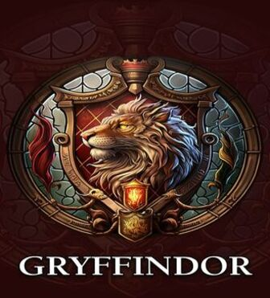
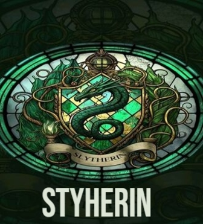
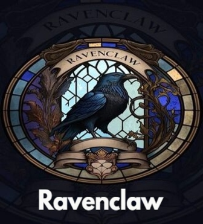
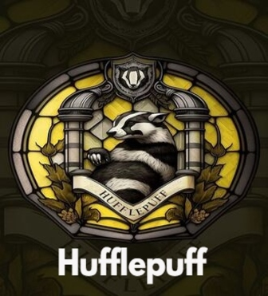
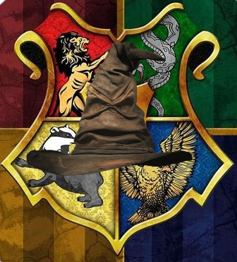

-
Gryffindor
Atributos
Ocupações:
Godric Gryffindor – Grifinória “Gryffindor ousado, do pântano selvagem” morava em Godric’s Hollow, o futuro lar de muitos personagens conhecidos – desde Bathilda Bagshot até os próprios Potter.Muito parecido com sua casa, Grifinória, Godric era conhecido por sua bravura e suas habilidades como um duelista talentoso.
Ele tinha uma espada criada para ele por Ragnuk, o Primeiro, o melhor dos ourives goblins. A espada era de “prata reluzente” com “rubis do tamanho de ovos”.Além de dar a Hogwarts o Chapéu Seletor, Godric sempre será conhecido por suas habilidades em batalha e sua luta contra a discriminação trouxa no mundo mágico.
Na verdade, foi uma discussão séria entre ele e Salazar Slytherin – que fez com que o último deixasse Hogwarts. Godric era, certamente, um homem à frente de seu tempo.“Você pertencer à Grifinória, onde moram os corajosos de coração. Sua ousadia, coragem e cavalheirismo separam os Grifinórios.”Fundada por Godrico Grifinória, essa casa preza pela coragem, determinação e lealdade. Os alunos da Grifinória são conhecidos por sua bravura e vontade de enfrentar desafios. O Chapéu Seletor muitas vezes escolhe estudantes que têm um forte senso de justiça e estão dispostos a proteger os mais fracos. Harry Potter, Hermione Granger e Rony Weasley são alguns dos alunos notáveis da Grifinória. -
Slytherin
Atributos
Ocupações:
Salazar Slytherin – Sonserina Por muitos anos, tudo estava bem entre os quatro fundadores. No entanto, quando o astuto Salazar Slytherin, “de fen”, sugeriu que apenas aqueles de famílias mágicas mereciam frequentar Hogwarts, seus três amigos se opuseram a ele. Salazar, então, deixou a escola. Mas antes de fazer isso, ele construiu uma sala secreta dentro do castelo com uma grande estátua de si mesmo e, dentro dela, ele deixou um monstro que só ele poderia controlar. A sala seria conhecida como A Câmara Secreta. Como visto nas aventuras de Harry, a sala permaneceria em segredo até que o verdadeiro herdeiro de Salazar Slytherin chegasse a Hogwarts, pronto para terminar seu trabalho: utilizar o Basilisco, uma grande cobra escondida no castelo, para eliminar os bruxos nascidos trouxas que frequentassem a escola. O fundador da casa da Sonserina também deixou para trás um medalhão de ouro, que se tornaria uma herança de família e, mais tarde, também foi utilizada como uma Horcrux por Lorde Voldemort. Apesar de suas falhas, Salazar era um bruxo talentoso, habilidoso em Legilimência e Ofidioglota. “Ou talvez na Sonserina. Você vai fazer seus amigos de verdade. Essas pessoas astutas usam qualquer meio para alcançar seus fins.” Salazar Sonserina valorizava a astúcia, a ambição e o desejo de grandeza. Os membros da Sonserina são frequentemente percebidos como pessoas determinadas e dispostas a fazer qualquer coisa para alcançar seus objetivos. Além disso, eles têm uma inclinação para as artes das trevas. Draco Malfoy e Severo Snape são exemplos de sonserinos proeminentes. -
Ravenclaw
Atributos
Ocupações:
Rowena Ravenclaw – Corvinal Rowena Ravenclaw, “de glen”, foi a bruxa mais brilhante de seu tempo, mas sua história é de tragédia. Conhecida por sua inteligência e amor ao aprendizado, ela usava um diadema que diziam conceder sabedoria ao seu usuário. No entanto, a história de Rowena veio com uma tragédia: sua própria filha ficou com ciúmes da incrível inteligência de sua mãe. Helena Ravenclaw, então, roubou o diadema de sua mãe e fugiu – fato que Rowena manteve escondido mesmo quando adoeceu. Desesperada para ver sua filha uma última vez, ela enviou um homem para trazer Helena para casa. Infelizmente, esse homem era o Barão Sangrento, que estava perdidamente apaixonado pela garota, e a esfaqueou quando ela se recusou a voltar para casa. Depois da trágica morte de Helena, a lenda diz que Rowena morreu de coração partido. “Ou ainda na sábia e velha Corvinal, se você tem uma mente pronta. Onde aqueles de inteligência e aprendizado sempre encontrarão sua espécie.” A casa Corvinal, fundada por Rowena Corvinal, é conhecida por valorizar a inteligência, a criatividade e a sabedoria. Os alunos de Corvinal são curiosos e têm uma sede insaciável de conhecimento. Eles também são conhecidos por seu pensamento lógico e racional. Hermione Granger é um exemplo perfeito de uma corvinal. -
Hufflepuff
Atributos
Ocupações:
Helga Hufflepuff – Lufa Lufa Helga, “do vale largo”, foi a fundadora da casa que valorizava aqueles que eram “justos e leais”. De acordo com o Chapéu Seletor, ela prometeu “ensinar a todos” – e não julgou certos alunos em detrimento de outros, não importa quanto talento eles tivessem ou de que famílias eles vieram. Em Hogwarts, Hufflepuff era conhecida por seus talentos em feitiços e usava suas habilidades para preparar comida para criar banquetes esplêndidos que eram apreciados por todos. Seu talento reuniria toda a escola em harmonia. Helga também foi a fundadora responsável por dar empregos aos elfos domésticos nas cozinhas, dando a eles um lugar para trabalhar onde seriam tratados de forma justa e não abusados. Ela deixou para trás um cálice de ouro, que mais tarde foi utilizado por Lorde Voldemort como uma Horcrux. “Você pode pertencer à Lufa Lufa, onde eles são justos e leais. Esses lufa lufanos pacientes são verdadeiros, e não tem medo de labuta.” A casa Lufa-Lufa, fundada por Helga Lufa-Lufa, valoriza a bondade, a paciência, a amizade e a lealdade. Os membros desta casa são geralmente pessoas gentis que se preocupam com o bem-estar dos outros. Eles têm uma disposição amigável e são conhecidos por seu trabalho árduo. Cedrico Diggory é um exemplo notável de um lufa-lufa. -
Chapeu Seletor
Atributos
No primeiro ano a cerimônia de seleção em Hogwarts é um dos momentos mais emocionantes para os alunos do primeiro ano. Eles colocam o Chapéu Seletor na cabeça, que então decide a qual casa eles pertencerão. O Chapéu Seletor leva em consideração os traços de personalidade e as aspirações de cada aluno ao fazer sua escolha.Em última análise, as casas de Hogwarts desempenham um papel fundamental na vida dos bruxos e bruxas, moldando sua experiência escolar e influenciando suas amizades e valores. Embora muitos alunos se identifiquem com as características de uma casa em particular, é importante lembrar que a verdadeira magia de Hogwarts está na diversidade e na união de todos os seus alunos, independentemente de sua casa.